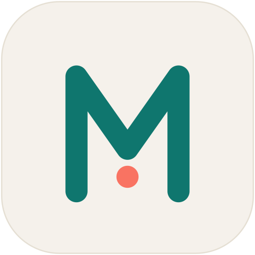
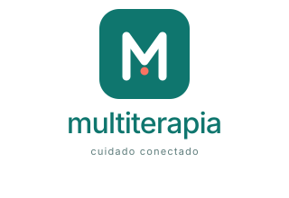
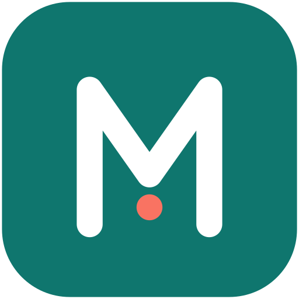
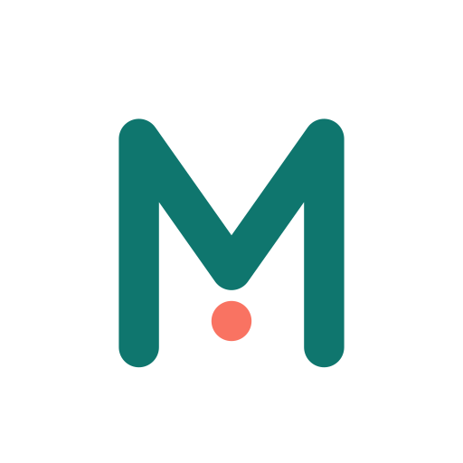

O kit completo
da multiterapia.
Logos, ícones, lockups e telas de splash — pronto para usar na App Store, Google Play, redes sociais, slides e site. Light + dark, vetor (SVG) e raster (PNG 1024).
Três variantes,
um único sistema.
A geometria do M permanece idêntica nas três versões — só as cores se adaptam ao ambiente. Use a variante primária sempre que possível; as outras existem para superfícies que não comportam o fundo teal.

{kind=link}

Master · Fundo claro
Superfícies neutras, cards, papelaria.
{kind=link}
{kind=link}
Marca + wordmark
em duas orientações.
Use o horizontal em headers de site e e-mail; o vertical em badges, papel timbrado e materiais de pitch. Nunca recomponha — sempre use o arquivo fornecido.

Tudo em PNG e SVG.
Lista completa dos arquivos do pacote. PNG @1024 para uso geral e store; SVG para qualquer escala.
{kind=link}
{kind=link}
{kind=link}
{kind=link}

{kind=link}
{kind=link}
{kind=link}
Cores que cuidam.
Teal como base — calma, confiança, ambiente clínico. Coral como acento — calor humano, presença, cuidado. Neutros bege como respiro para que a marca não pese.
O momento de abertura.
A primeira tela que o usuário vê. Centralizada, sem ruído — apenas o ícone mestre e o wordmark. Geramos light e dark automaticamente conforme o tema do dispositivo.
Splash · light
Fundo bege
marca ao centro
Usado quando o sistema está em tema claro. Disponível em 1×, 2× e 3× nas pastas de splash.

Splash · dark
Fundo escuro
versão noturna
Usado em OLED e tema noturno. Mesma composição, contraste invertido.
O que fazer
— e o que evitar.
O ícone foi calibrado para funcionar em três fundos. Toda alteração — fundo errado, esticamento, recoloração — quebra a leitura da marca.
Use o ícone primário sobre fundo teal de marca, ou em superfícies neutras com a variante light correspondente.
Não aplique o ícone sobre gradientes saturados, fotos ou cores fora da paleta — perde contraste e identidade.
Mantenha espaço livre equivalente ao raio do canto arredondado em todas as direções.
Não estique, distorça ou rotacione o ícone. As proporções foram desenhadas para os arquivos fornecidos.